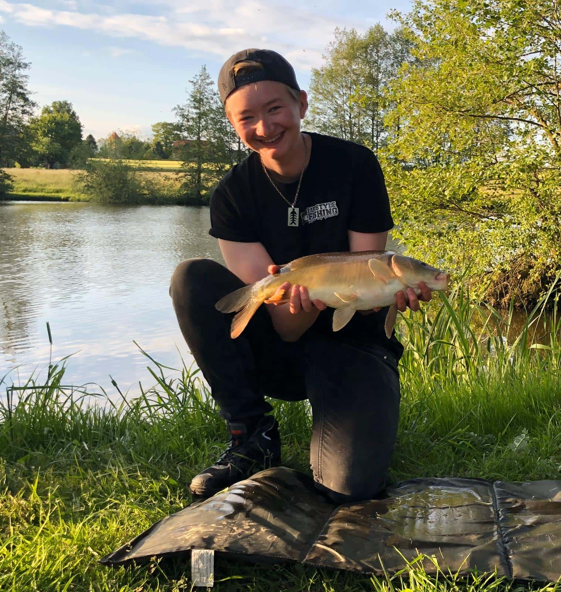
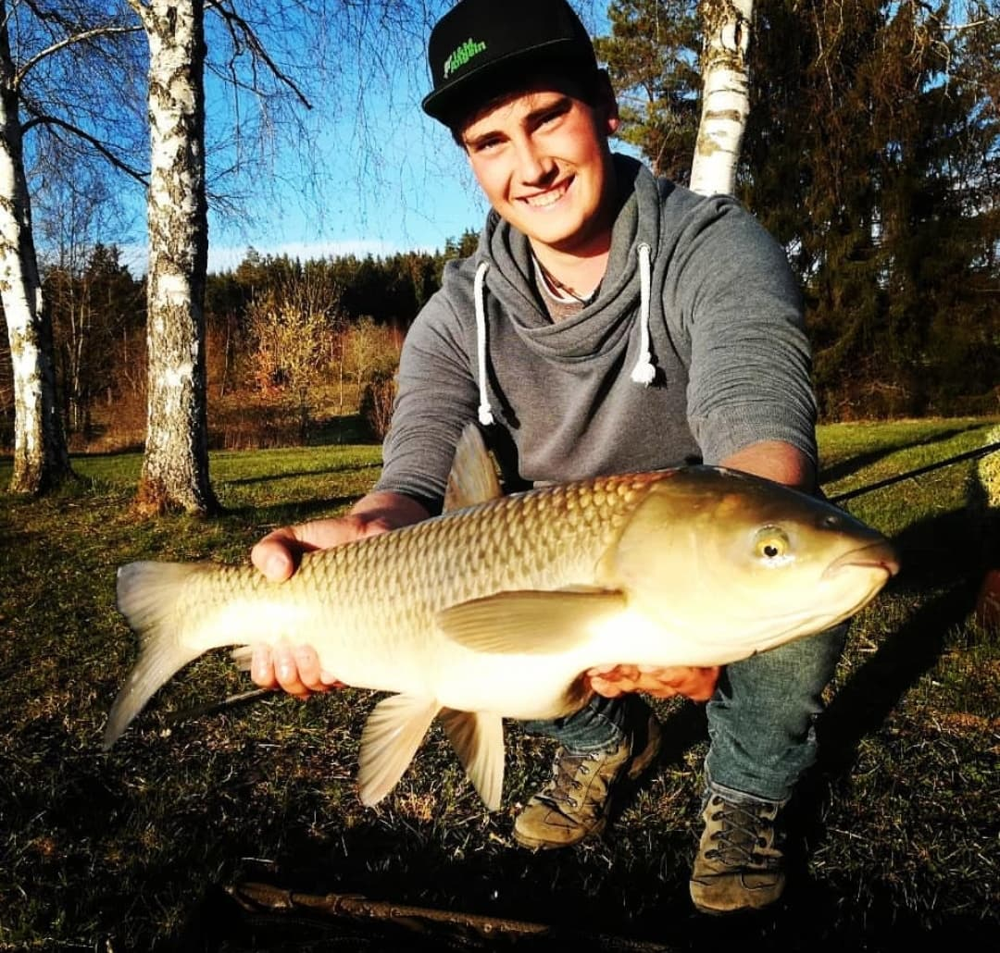
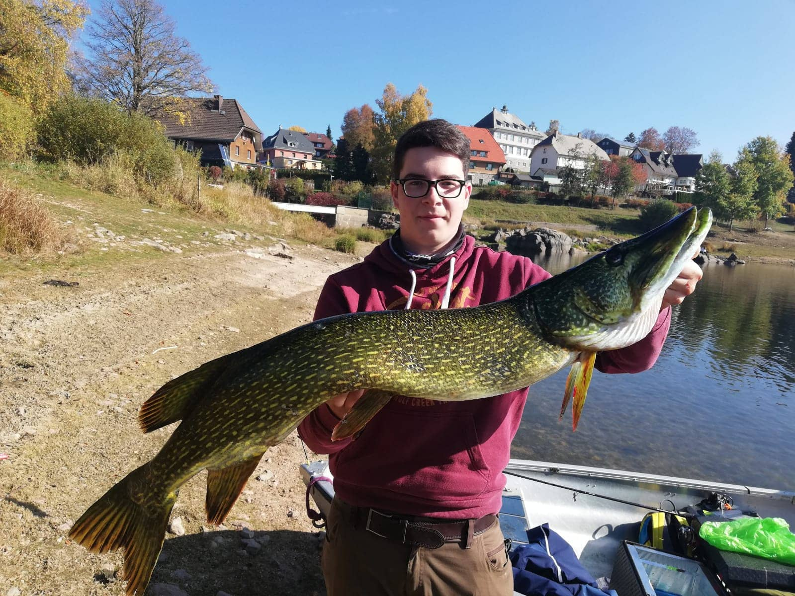
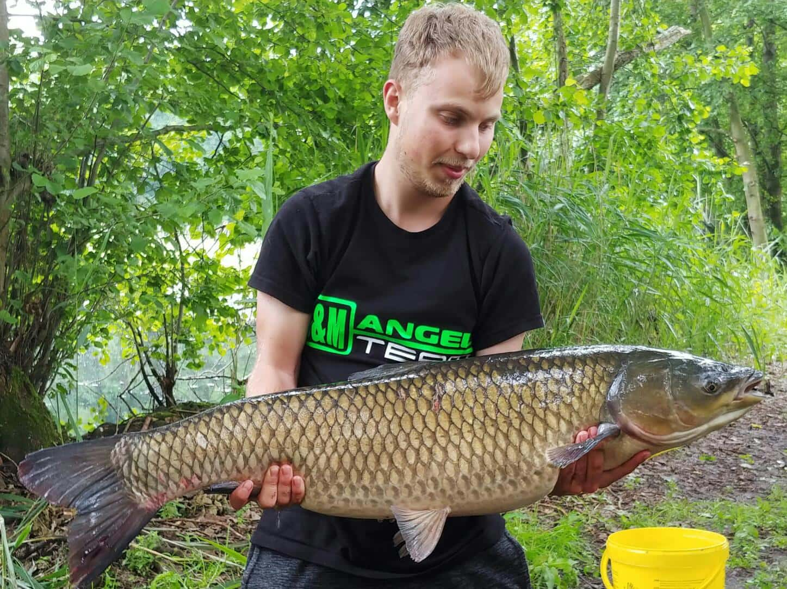
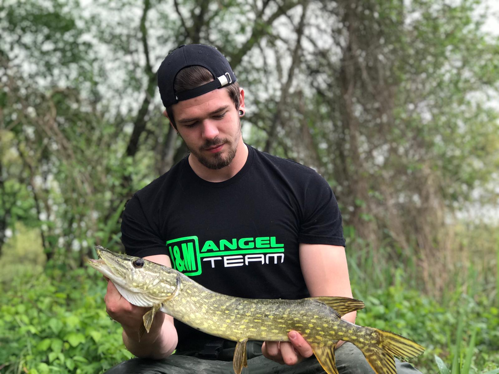
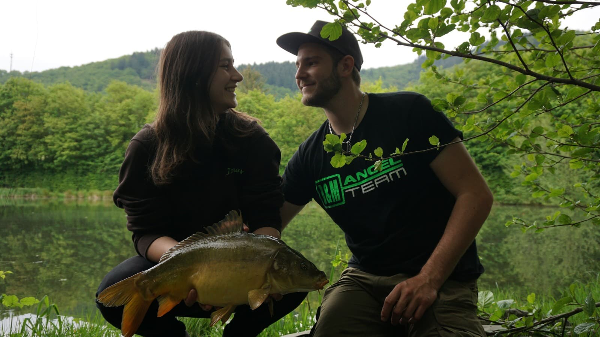
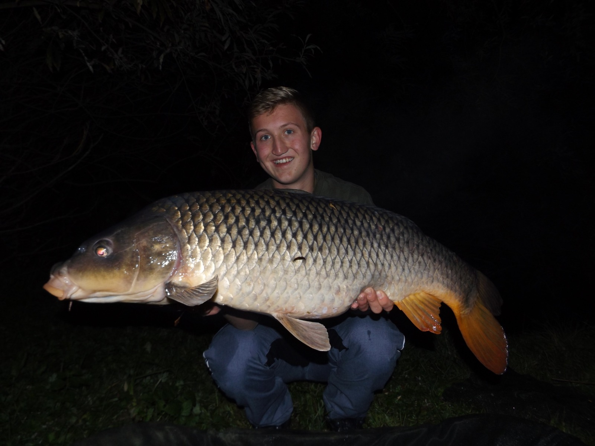
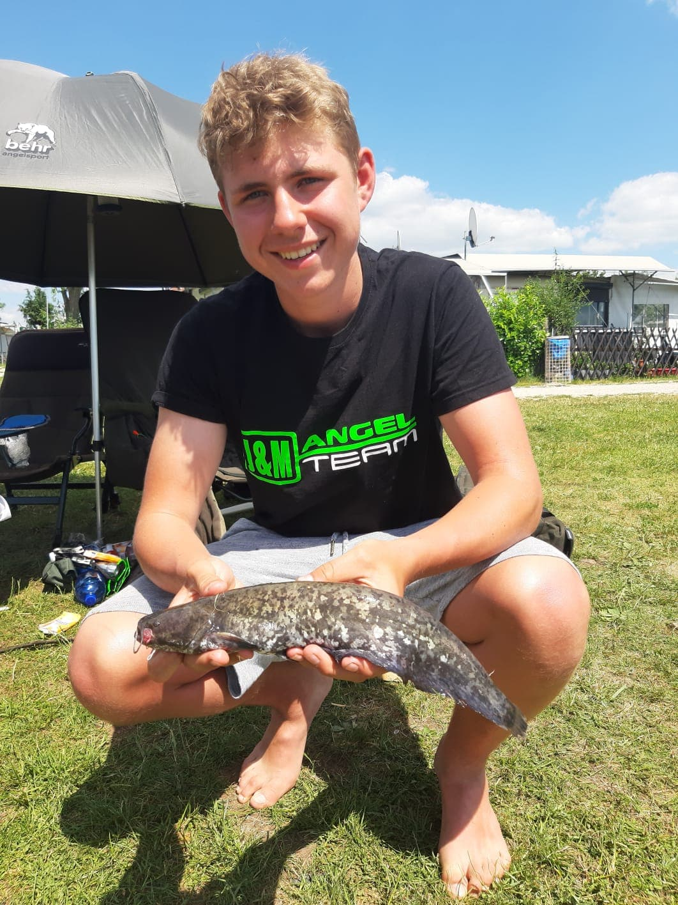
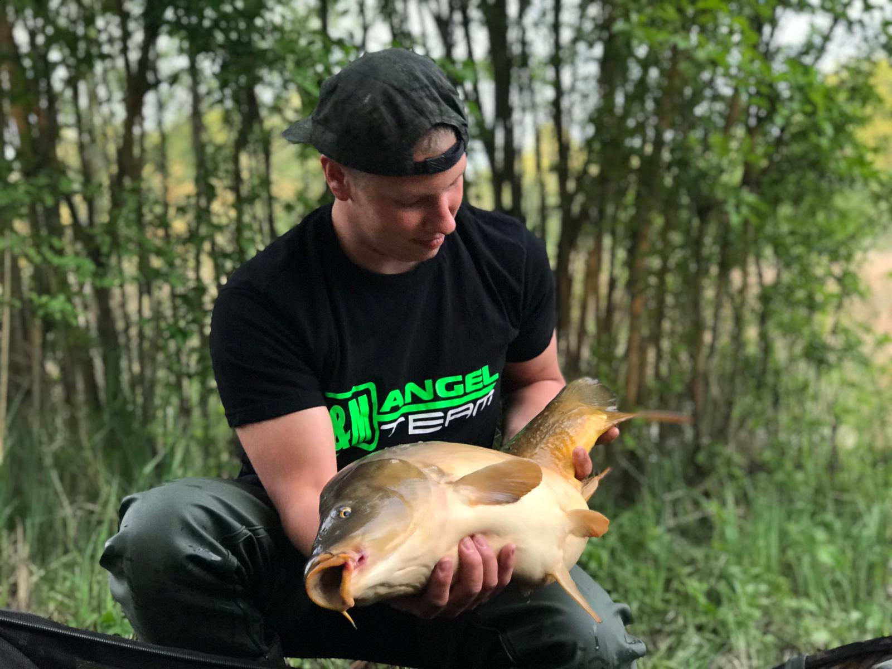

Anne Heimlich

Steckbrief
- Alter 20 Jahre
- Beruf Erzieher in Ausbildung
- Region Eberswalde/Brandenburg
- Lieblingsgewässer Kleinere Seen
- Lieblingsfisch Schleie, Rotfeder, Karpfen
- Größter Fang Döbel 52cm, Rotfeder 39cm
- Tollster Fang Meine erste Forelle, welche ich mit der Unterstützung von Jonas von J&M Angeln und Benedikt von bt fishing, fangen durfte
Über mich
Ich angel seit ich 6 bin. Durch Lifestylefishing
(www.lifestylefishing), ein Projekt das ich seit
2013 betreibe, habe ich die Jungs von J&M Angeln
kennengelernt. Ich bin Allrounder durch und durch,
habe also auch beim Karpfenangeln immer eine
Spinnrute mit im Gepäck.
Benedikt Lang

Steckbrief
- Alter 17 Jahre
- Beruf Schüler
- Region Schwarzwald/Baden-Württemberg
- Lieblingsgewässer Donauoberlauf + Zuflüsse
- Lieblingsfisch Bachforelle, Döbel, Barben und Karpfen
- Größter Fang Graskarpfen 103cm, Bachforelle 53cm
- Tollster Fang Bachforelle, 47cm; Barbe, 87cm
Über mich
Servus, mein Name ist Benedikt und komme aus dem Schwarzwald
Angefangen mit dem Angeln habe ich ca. mit 5 Jahren. Anfangs
mit Pose meist auf kleinere Fische. Später habe ich mich
dann mehr für das Nachtangeln auf Aal bei uns im Oberlauf
der Donau interessiert. Mittlerweile schlägt mein Anglerherz
für das Ultra Light/Topwater- und Fliegenfischen in kleinen
Schwarzwaldgewässern. Hier sind meine Hauptzielfische
Bachforellen und der Döbel. Hierbei ist für mich keine
Kletteraktion und kein Weg zu anstrengend, um einem
Fisch ans Band zu bekommen. Abgesehen davon bin ich
ein begeisterter Allrounder und gehe auch gerne mal
gezielt auf Karpfen oder Hecht. Ich hoffe das ich/wir
euch mit Bildern und anderen Beiträgen unterhalten
können. Euch allen eine erfolgreiche Saison und Petri Heil!
Euer Bene
David Lott

Steckbrief
- Alter 18 Jahre
- Beruf Mechatroniker
- Region Schwarzwald/Baden-Württemberg
- Lieblingsgewässer Schluchsee
- Lieblingsfisch Hecht
- Größter Fang Hecht 110cm
- Tollster Fang Hecht 110cm
Über mich
Hi, ich heiße David, bin 18 Jahre alt und komme aus dem Schwarzwald nahe Freiburg.
Ich bin begeisterter Raubfischangler und betreibe das Spinn- und Schleppangeln sehr
intensiv. Zum Angeln bin ich über Freunde gekommen, die mich an einen Vereinsweiher
mitgenommenen hatten als ich ca. 13 Jahre alt war. Die Ruhe am Wasser, in der Natur
und das Warten auf den ersten Biss haben mich von Anfang an fasziniert. Als ich
dann meinen ersten Fisch (eine Forelle) am Haken hatte, hat es mich komplett
gepackt. Hier fing alles an, die vielen Stunden am Wasser, die schönen Fänge,
die unzähligen Einkäufe in Angelläden und Onlineshops, die vielen Erfahrungen
die ich bei jedem einzelnen meiner Angeltrips gemacht habe, die neuen
Bekanntschaften und sehr guten Freunde die ich durchs Angeln gewonnen
habe. Anfangs war ich der totale Alrounder, Hauptsache erstmal ein paar
Fische fangen... Ein Jahr lang war ich durch meinen Jugendfischereischein
bei jedem Ausflug auf Bekannte mit richtigem Angelschein angewiesen.
Die fehlende Flexibilität und das teilweise fehlende Wissen haben mich
dazu bewogen, mich vor 3 Jahren zum Angelscheinkurs anzumelden. Nachdem
ich meinen Fischereischein gemacht hatte, reizte mich vor allem das
Karpfenangeln. Bald schon konnte ich dann auch meine ersten schönen
Karpfenfänge verzeichnen. Doch im Laufe der Zeit fand ich mehr und
mehr Geschmack am Spinnfischen. Immer öfters zog ich mit meiner
Spinnrute los. Und als ich dann endlich auch meinen ersten wilden
Raubfisch auf Spinköder (einen Barsch) gefangen hatte, war ich
begeistert. Den Biss direkt in der Rute zu spüren war einfach
ein Hammer-Gefühl! Es klappte immer besser mit der Spinnrute
und regelmässig fing ich meine Fische.
David Rosenthal

Steckbrief
- Alter 20 Jahre
- Beruf Mechatroniker
- Region Karlsruhe/ Baden-Württemberg
- Lieblingsgewässer Die Vielfalt macht es aus
- Lieblingsfisch Barsch
- Größter Fang Hecht 124cm
- Tollster Fang Bachforelle 70cm
Über mich
Felix Hübner

Steckbrief
- Alter 19 Jahre
- Beruf Werkzeugmechaniker
- Region Ingolstadt/Bayern
- Lieblingsgewässer Baggersee, Verkrauteter Waldsee
- Lieblingsfisch Waller, Karpfen
- Größter Fang Wels, 184cm
- Tollster Fang Koikarpfen
Über mich
2011 habe ich mit dem Angeln angefangen, damals nur mit dem Schwimmer
auf Rotfedern. Es dauerte nicht lang, da fing bei mir das Karpfenfieber an.
Ab dem Jahr 2012 habe ich mir eine Art Imperium an Karpfentackle aufgebaut
und vieles davon in den heimischen Seen versenkt (wer kennt‘s nicht). 2016
begeisterte mich das Wallerfischen, bei dem ich recht schnell sehr gute Fänge
in deutschen Gewässern verzeichnen konnte. Ich hoffe euch mit Artikeln und
Bildern unterhalten zu können!
Franziska Lang


Steckbrief
- Alter 20 Jahre
- Beruf Studentin
- Region Schwarzwald/Baden-Württemberg
- Lieblingsgewässer klare Badeseen
- Lieblingsfisch Mein gelber Goldfisch
- Größter Fang Karpfen 6kg
- Tollster Fang Mein Freund
Über mich
To be continued
Johannes Pfeiffer

Steckbrief
- Alter 19 Jahre
- Beruf Polizist
- Region Ingolstadt/Bayern
- Lieblingsgewässer Naturseen
- Lieblingsfisch Karpfen
- Größter Fang Wels 175cm
- Tollster Fang Orangener Koikarpfen
Über mich
Schon vor meinem Schulbeginn ging ich das erste mal
ans Wasser um den Fischen nachzustellen. Beim
Karpfenangeln fand ich dann meine Leidenschaft,
aber seit ein paar Jahren bin ich auch Begeisterter
Wels Angler. Von Jahr zu Jahr lernt man neue Taktiken
und knüpft neue Freundschaften am Wasser, was neben
der schönen Natur das wunderbare am Angeln. Also
dranbleiben Freunde, die Erfahrung machts. Petri,
euer Johannes.
Jonas Schuster

Steckbrief
- Alter 17 Jahre
- Beruf Schüler
- Region Schwarzwald/Baden-Württemberg
- Lieblingsgewässer Natursee/Baggersee
- Lieblingsfisch Karpfen
- Größter Fang Karpfen 10kg, Wels 120cm, Schleie 4kg
- Tollster Fang Es gibt keinen Tollsten Fang. Fische sind schöne Tiere, egal in welcher Größe.
Über mich
Ich habe mit 8 Jahren angefangen zu angeln mit meinem Vater und habe mit 10
meinen Jugendschein bekommen und bin direkt in den ASV Blumberg eingetreten.
Mit 14 habe ich direkt meinen Angelschein gemacht. Neben dem Angeln spiele
ich Handball in Blumberg.
Manuel Heller

Steckbrief
- Alter 19 Jahre
- Beruf Maschinenführer
- Region Niederbayern, Neustadt a. d. Donau
- Lieblingsgewässer Fluss, Baggersee, alte Naturseen
- Lieblingsfisch Karpfen
- Größter Fang Wels, 185cm
- Tollster Fang Karpfen 22,5kg
Über mich
Hallo mein Name ist Manuel. Ich bin 19 Jahre alt und komme aus Bayern. Bereits mit
2 Jahren hat mich mein Vater mit zum Fischen genommen. Mit 12 Jahren habe ich die
Fischerprüfung absolviert und fische seit dem gezielt auf Karpfen.